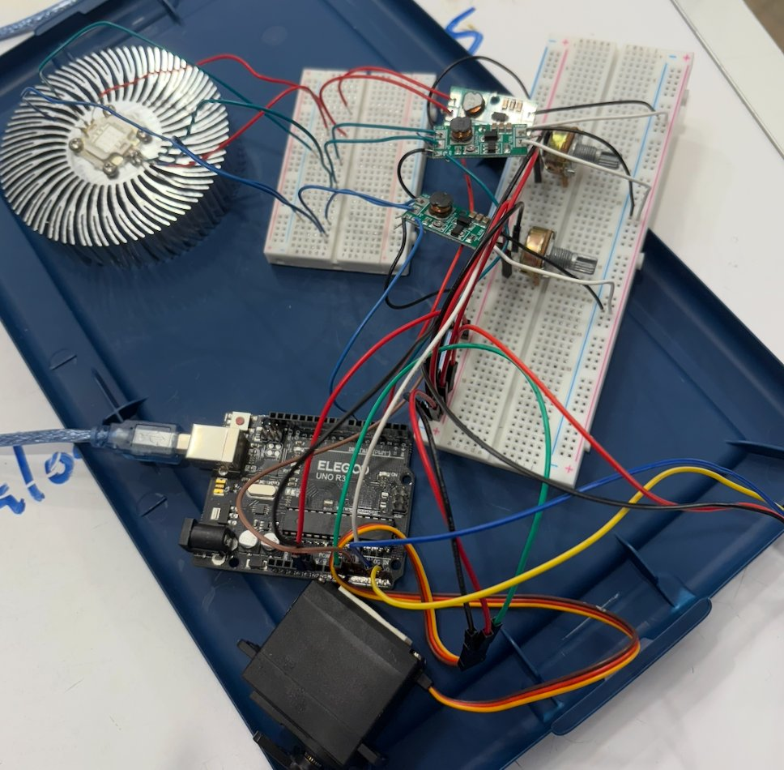
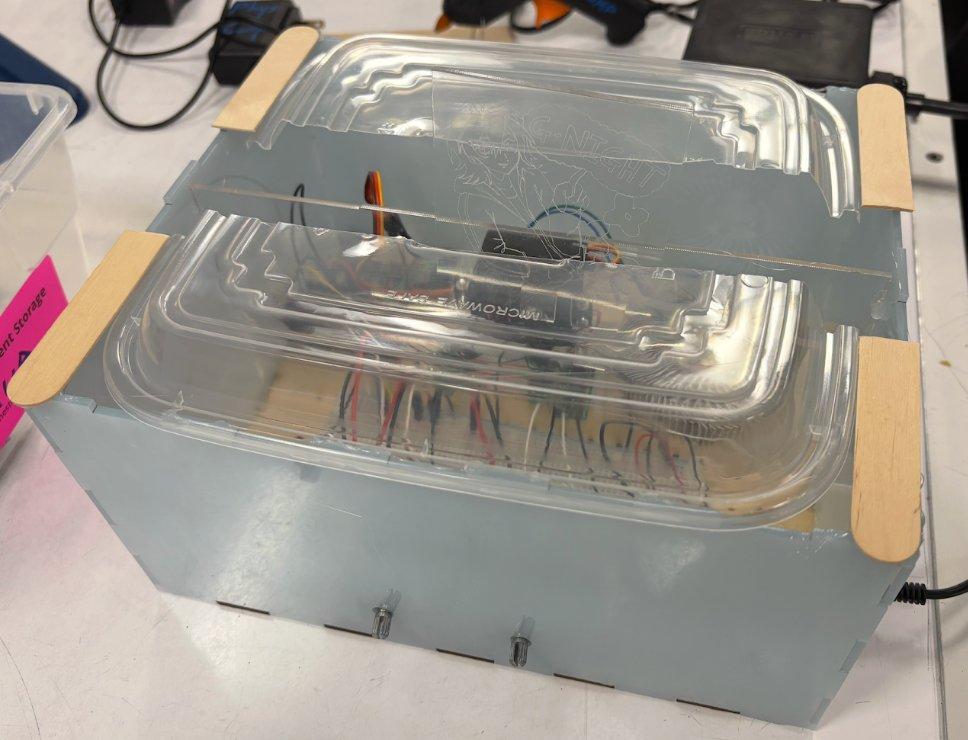
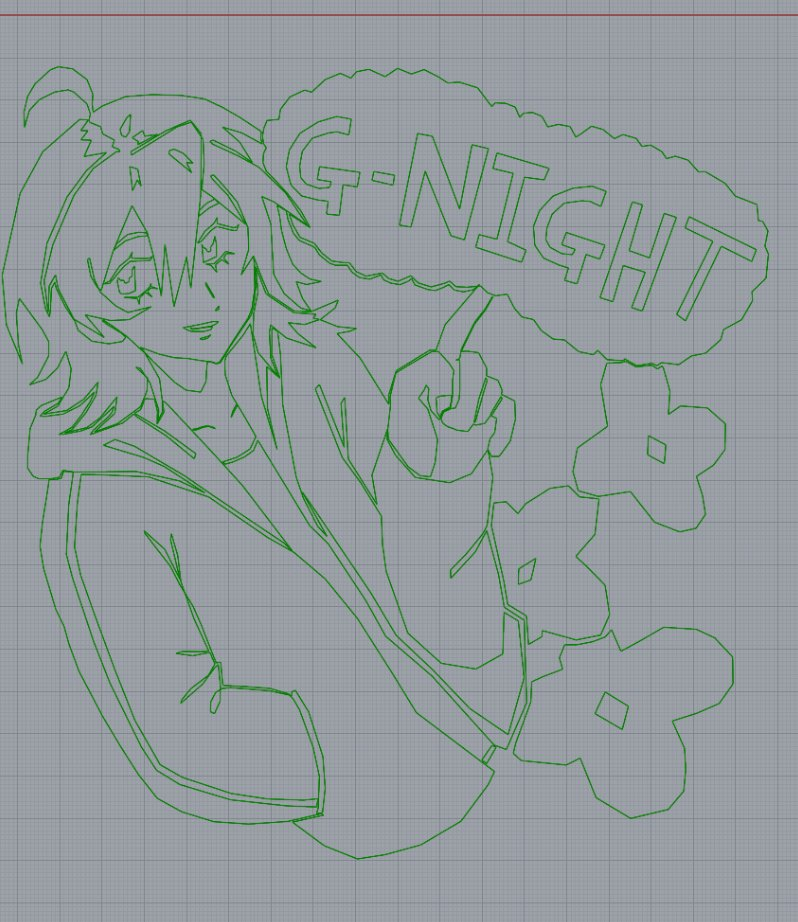
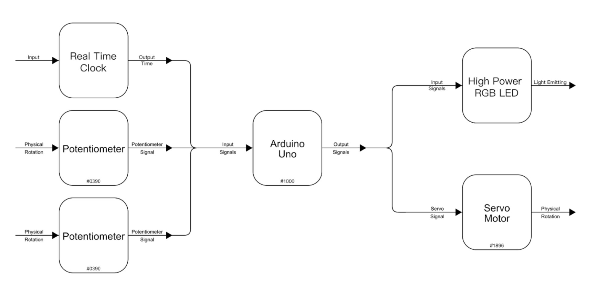

This project is an emotional support nightlight to relieve my pre-sleep anxiety. With two modes, it softly reminds me of when to go to bed without causing anxiety (because that's my own original character why would I be scared of him). Except for that, it also has two faces of my original character on it. When turned on, it is at the pre-sleep mode, which shows a happy face of my character and of the light color that I can adjust. When one hour passed by, it turns into the angry mode, where a not-so-happy face of the character is shown and the light color turns to the opposite on the hue ring. After the other 1 hour, it will automatically shut down and turn on again at the same time tomorrow. The hue and the brightness are both adjustable.

The electronic part of the project. The LED is wired on three drivers, the potentiometer also shown. And a servo motor. This is the part that used the most effort since it requires 24 points to solder.

Because the final outcome of the servo motor-character part is not compatible with the original lid design, I hand cut another lid with wooden sticks and transparent plastic box. It magically works.

At first I tried to engrave the character using a pixel-vector transformer. I hand drew the character and then transformed it into SVG. However, it doesn't work on the laser cutter and the engrave looks like dots. I was told that the laser cutter cannot cut short lines and has to cut in loops, so I mouse drew the character again in Rhino, a 3D software, this time using loops instead of lines.
The final result turns out to be fine and usable for the project. These are two close-ups of the engraved acrylic pieces.
It's really interesting as I didn't expect the engraving does take much more time than what I have expected. I thought the most difficult part would be the electronics and thus saved less time than I thought for fabrication and more on the electronics. However, the actual fabrication process had up to at least 2/3 of it contributes to the time it took to engrave the character that I have already drawn!

When I was making the project, I was also in one of the worst days in the semester with a lot of unrelated personal negative events going on. As a result, I had to treat the project as an escape instead of as a project, because that's the only time that I don't need to think about other terrible things. This put me into another work status else than what I am used to. Also because how emotionally heavy this project is, there's almost a faith of me to push the project to the limit where I want it to be at.
From my own perspective, I love how the outcome comes out. It's a lot scrappier than what I have imagined, but the fact of it working is so satisfying. I would definitely add more function if I were left to improve it. In the dark, all of your senses are highly improved, not only the visual aspect. It's reasonable for this nightlight to have something else than the visual effect. For example, in the original plan I planned to add a DF Mini-player to play light music and switch to another piece of music when it turns into the angry mode. Also, I even consider to voice over my character to play a piece of line or so to remind me of putting my phone down and going to sleep.